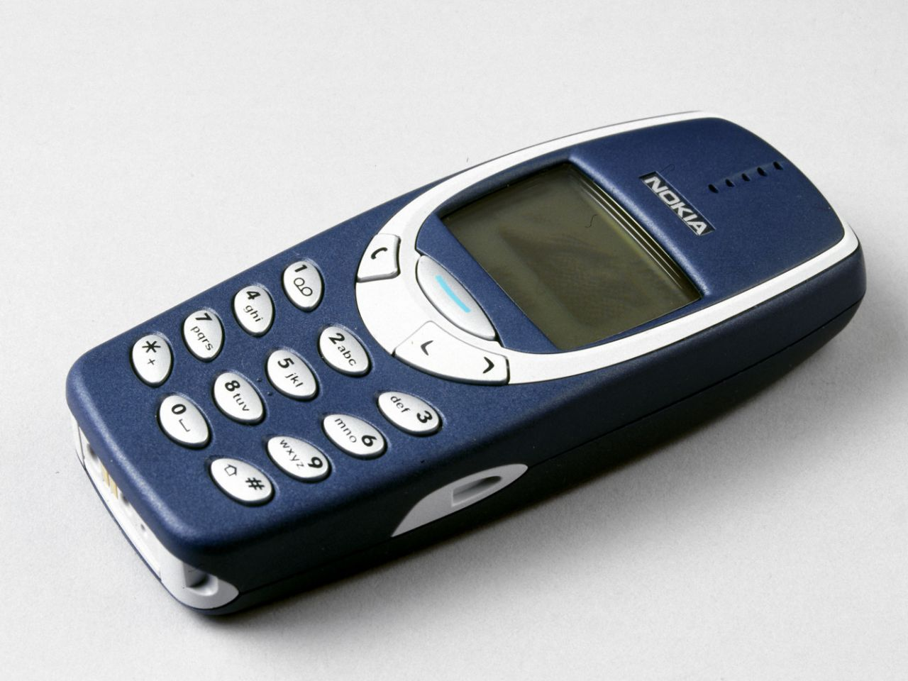
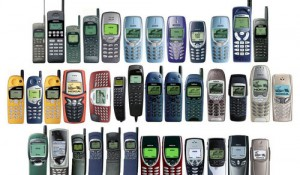

Another important device of this decade was the first mobile phone, it was a technology objects used in the first 2000s.
It went on sale on March 6, 1983, but it spread after 2000.
The world's first mobile phone call was made on April 3 1973, when Martin Cooper, a senior engineer at Motorola, called a rival telecommunications company and
informed them he was speaking via a mobile phone.
The development of cell phone technology was enabled by advances in
MOSFET (metal-oxide-silicon field-effect transistor) semiconductor device fabrication.
The MOSFET (MOS transistor), invented by Mohamed Atalla and Dawon Kahng at
Bell Labs in 1959, is the basic building block of modern cell phones.
These early cell phones were about 9 inches high and 5 inches deep, with a weight of 2½ pounds.
Mobile phones are devices to call and send message to other people.
The first of them had only these two functions, but over time they were used also to take some photos,
to chat by social media and playing with some mobile games.
After 2000 they were greatly spread in all over the world, for all ages, mostly among young people.
About the age of users, it was quite variable, because they were used by people of all ages, but especially the younger age groups.
In the 2000s the mobiles were very old styled models, they were used mainly for to phone people and they had few games like Snake or Pacman. They were sold in an infinite variation of colours: from green to black, from red to blue...And their cost was quite expensive in those years, now they’re very cheap!
About this device, we can ask to our cousins, uncle, aunt or parents, to know something more; how much time it was used, and other features…
Here there is a short testimony and interview to a person who lived in that decade and who used these players.
-WHEN YOU WERE YOUNG, DID YOU USE A MOBILE PHONE?
“Yes, when I was very young, I used the mobile phone to call and text message to my friends and parents,
I remember that this device became popular when I was a teenager.”
- WHAT WAS THE DEVICE LIKE?
“It had a lot of keys and a small screen, you could only call and send text messages.
They were of very different colours, mine was grey, and it was great!”
-HOW LONG DID YOU USED THIS OBJECT DURING THE DAY?
“I often used it to meet my friends and after school for to get organized to do homework and to go
out with my friends. I used it for many hours during the day”.
Over the time mobile phones have had several changes.
In particular, before reaching the devices of the early 2000s, there were other methods to call,
via fixed telephones, wheel or telephonic cabins. Then we moved on to the cell phones we have described,
with very small screens, and keys.
Nowadays, with the progress of technology, we have phones with touch screens, which can be connected
to a wi-fi, with which we can call, send messages, chat on social networks, play video games and surf the Internet,
watch videos or listen to music, which was not possible until a few decades ago